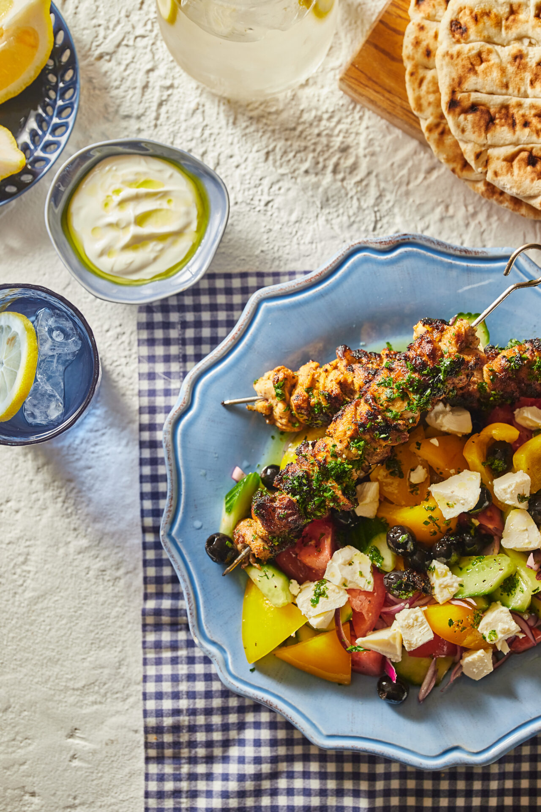

Görög csirkenyárs

Description
Ez a kaja nem más, mint a souvlaki, a görögök szeretett húsnyársa. Egyszerű és gyors recept, a pác pedig segít abban, hogy jó omlós legyen a husi
Ingredients
- 400 g bőr nélküli csirkecombfilé
- 2 tk oregánó
- 1 csokor petrezselyem
- 4 ev olívaolaj
- 1/2 db citrom
- só, bors
Steps
- A görög csirkenyárs első lépéseként a csirkecombokat 3 cm-es kockára vágjuk és egy edénybe rakjuk. Hozzáadjuk az olívaolajat, az oregánót, a citrom reszelt héját és kifacsart levét, a finomra vágott petrezselymet és sózzuk, borsozzuk. Alaposan összekeverjük és minimum 20 percre a hűtőbe tesszük pácolódni.
- A salátához a paradicsomot, az uborkát és a paprikát 2-3 cm-es rusztikus darabokra, a lila hagymát pedig vékony cikkekre vágjuk és egy keverőtálba tesszük. Ízesítjük a citrom reszelt héjával és kifacsart levével, rácsorgatjuk az olívaolajat, sózzuk, borsozzuk és összekeverjük.
- A nyársakat faszén felett (vagy ennek hiányában egy grillserpenyőben) közepesen erős hőfokon megsütjük oldalanként 3-3 perc alatt. A tányérra halmozunk egy-egy adag salátát, aminek a tetjére morzsolunk egy kis feta sajtot, pár szem olívabogyót teszünk rá és mellé helyezzük a megsült csirkenyársat is. A görög joghurttal és sült pitával együtt tálaljuk.